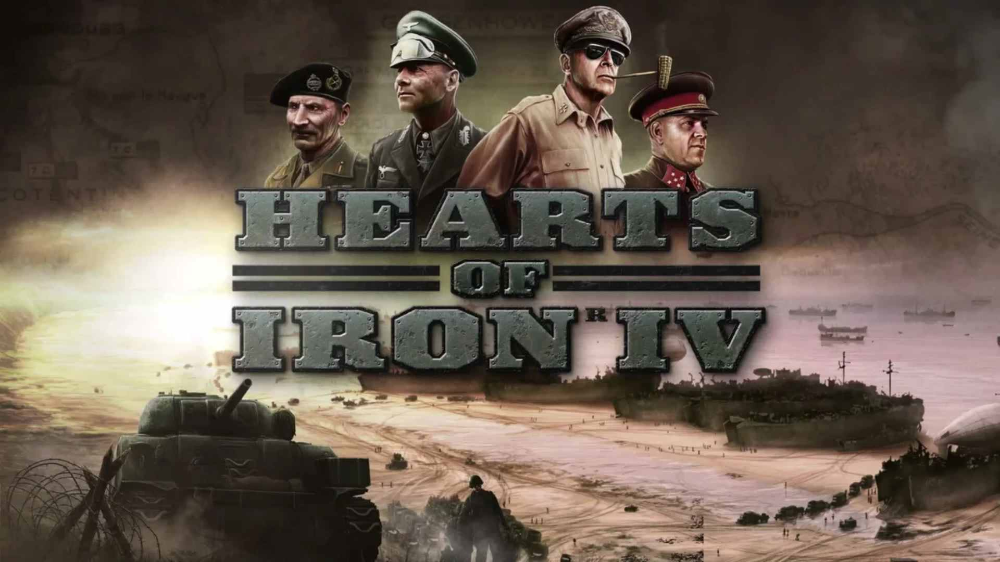

Игровой процесс фокусируется на Второй мировой войне. Игрок может взять под своё правление любое государство на Земле, существовавшее во время одного из сценариев, и привести его к победе или поражению в войне против других государств либо вовсе воздержаться от вступления в войну. Отличительной особенностью игры являются национальные фокусы. Продвигаясь по дереву национальных фокусов, игрок получает национальный дух, дающий определённые бонусы для страны, либо помощь в промышленности или исследованиях, либо цель войны против другой страны.

Год выпуска: 2016
Разработчик: Paradox Interactive
Достоверность: 9/10
Разработчик: Paradox Interactive
Достоверность: 9/10